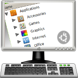

<div class="header"><h1 class="title">Menu Administration</h1></div>

<div class="main">

<div class="content"><ul>
	<li>The <em>Edubuntu Menu Editor</em> allows administrators to create and apply custom menus.</li>
	<li>Menus are created and applied using an easy to use menu editor.</li>
	<li>Settings can be applied to users or groups system-wide.</li>
</ul></div>

</div>


